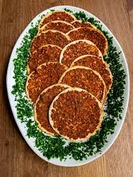
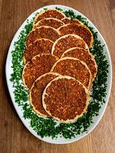

Le"Ngoummou" est un plat local particulièrement apprécié de la communauté mauritannienne, qui est faîte à base de viandes diverses, d'ail, de poivrons, de choux, de carottes, de citrouilles et est généralement accompagné de riz ou de couscous
Le Lahm Al-Ajeen est une variante de la pizza, avec une pâte fine garnie de viande hâchée,d'oignons et d'épices. Elle est cuite au four ou sur une plaque chauffante et est une option de restauration rapide populaire en Mauritanie
Le "El-Mafee" bien que originaire de l'Ouest de l'Afrique, le mafé est également un plat apprécié en Mauritanie . Il s'agit d'un râgout à base de viandes(souvent du boeuf ou du mouton), de légumes et s'une sauce aux arachides, et bien souvent accompagné de riz ou de bananes plantains.


La littérature mauritanienne est une forme d'expression culturelle qui reflète l'histoire, la diversité culturelle et les préoccupations de la Mauritanie, un pays d'Afrique du Nord-Ouest. La littérature mauritanienne est influencée par la richesse de la culture et de l'histoire du pays, notamment l'héritage arabe-berbère, la tradition orale des populations autochtones, et l'impact de l'islam, qui joue un rôle important dans la société mauritanienne. La littérature mauritanienne est caractérisée par une variété de genres, y compris la poésie, la prose, le théâtre et l'essai. La poésie est l'une des formes les plus anciennes et les plus respectées de la littérature en Mauritanie, et de nombreux poètes mauritaniens sont réputés pour leur utilisation de la poésie arabe classique. Un exemple notable de la poésie mauritanienne est le genre appelé "Diwan," qui est un recueil de poèmes lyriques, souvent composés en arabe classique. Ces poèmes abordent des thèmes variés, tels que l'amour, la nature, la tradition et la religion. En ce qui concerne la prose, il existe des écrivains mauritaniens qui ont exploré des sujets contemporains et historiques. Certains auteurs se sont penchés sur les problèmes sociaux, politiques et économiques de la Mauritanie, tandis que d'autres ont écrit sur des questions identitaires et culturelles. Il est important de noter que la littérature mauritanienne est relativement peu connue en dehors de la Mauritanie, et il peut être difficile de trouver des traductions en langues étrangères. Néanmoins, il existe un intérêt croissant pour la littérature mauritanienne, et des efforts sont déployés pour la faire connaître à un public plus large. Quelques auteurs et poètes mauritaniens notables incluent Jiddou Ould Cheikh Sidya, Mohammed Lamin Ba, et Moussa Ould Ebnou. La littérature mauritanienne est un domaine en développement, et il est probable que de nouveaux talents émergeront à l'avenir pour enrichir davantage cette tradition littéraire.
Moussa-Ould-Ebnou et un de ses livres à succès